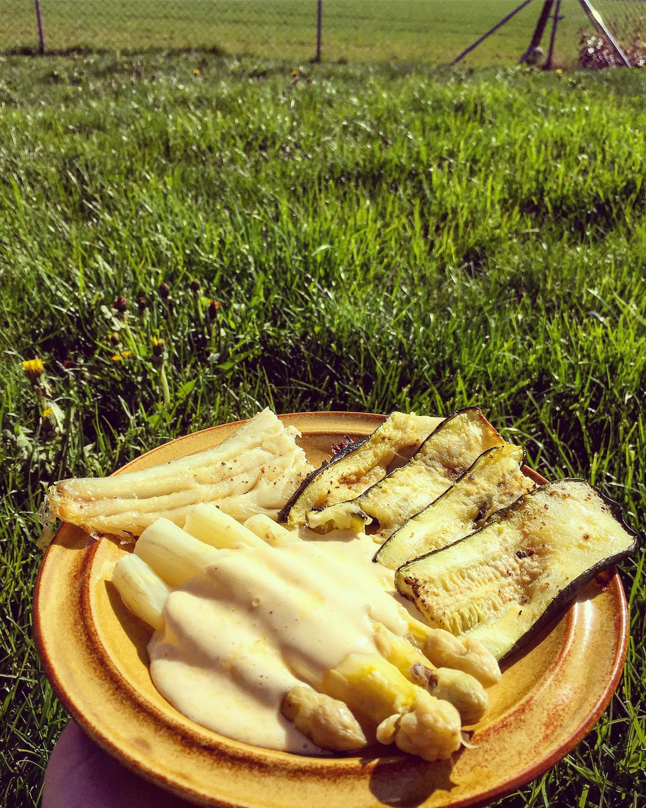

Holandská omáčka podľa @vostra_tereza — Normy Jedál
Barevne nevyrazne, nicmene chutove v poradku👍🏻. Dokonce i navzdory nepovedenemu pokusu o holandskou omacku c. 27473839.
Tesi mne, ze mne recept oznaceny na internetu za #blbuvzdorny vratil zpet #NohamaNaZem.
Tak zase #NikdyJindy🙃
#candat #chrest #HolandskaOmacka #cuketa #DnesJim #DnesVarim a to nebyva casto😅😇